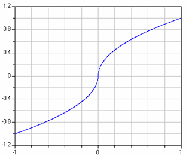

RegularizingCharacteristicsRegularizing characteristics |
|
Information
This information is part of the Modelica Standard Library maintained by the Modelica Association.
Pressure drop equations and other fluid characteristics are usually computed by semi-empirical equations. Unfortunately, the developers of semi-empirical equations nearly never take into account that the equation might be used in a simulation program. As a consequence, these semi-empirical equations can nearly never be used blindly but must be slightly modified or adapted in order that obvious simulation problems are avoided. Below, examples are given to demonstrate what problems occur and how to regularize the characteristics:
Square root function
In several empirical formulae, expressions of the following form are present, e.g., for turbulent flow in a pipe:
y = if x < 0 then -sqrt( abs(x) ) else sqrt(x)
A plot of this characteristic is shown in the next figure:

The difficulty with this function is that the derivative at x=0 is infinity. In reality, such a function does not exist. E.g., for pipe flow, the flow becomes laminar for small velocities and therefore around zero the sqrt() function is replaced by a linear function. Since the laminar region is usually of not much practical interest, the above approximation is used.
The direct implementation above does not work in Modelica, because an event is generated when x < 0 changes sign. In order to detect this event, an event iteration takes place. During the event iteration, the active if-branch is not changed. For example, assume that x is positive (= "else" branch) and shall become negative. During the event iteration x is slightly negative and the else branch, i.e., sqrt(x), is evaluated. Since this results in an imaginary number, an error occurs. It would be possible to fix this, by using the noEvent() operator to explicitly switch of an event:
y = if noEvent(x < 0) then -sqrt( abs(x) ) else sqrt(x)
Still, it is highly likely that good integrators will not work well around x=0, because they will recognize that the derivative changes very sharply and will reduce the step size drastically.
There are several solutions around this problem: Around x=0, the sqrt() function can be replaced by a polynomial of 3rd order which is determined in such a way that it smoothly touches the sqrt() function, i.e., the whole function is continuous and continuously differentiable. In the Modelica.Fluid library, implementations of such critical functions are provided in sublibrary Modelica.Fluid.Utilities. The above sqrt() type function is computed by function Utilities.regRoot(). This function is defined as:
y := x/(x*x+delta*delta)^0.25;
where "delta" is the size of the small region around zero where the sqrt() function is approximated by another function. The plot of the function above is practically identical to the one of the original function. However, it has a finite derivative at x=0 and is differentiable up to any order. With the default value of delta=0.01, the difference between the function above and regRoot(x) is 16% around x=0.01, 0.25% around x=0.1 and 0.0025% around x=1.